Die folgenden Reiseprogramme stammen aus früheren Jahren und dienen als Inspiration. Aktuelle Programme und Verfügbarkeiten auf Anfrage.
Four Seasons Private Jet
Your journey of a lifetime awaits you … Luxus, Komfort und Privatsphäre und Sie mittendrin! Erleben Sie als Fünf-Sterne-Jetsetter ein rundum einzigartiges Four Seasons-Erlebnis mit außergewöhnlichen Service in der Luft und am Boden. Eine Reise mit dem Four Seasons Private Jet ist bis ins kleinste Detail perfektioniert und beschert Ihnen unzählige Momente für die Ewigkeit. Lassen Sie sich von dem erstklassigen Service verzaubern und genießen Sie exklusive Zugänge und lokale Expertise. Alle Reiserouten umfassen Flüge mit dem Four Seasons Private Jet, Bodentransporte, Ausflüge und Besichtigungen, alle Mahlzeiten und Getränke sowie erstklassige Luxus-Unterkünfte in den weltweiten Four Seasons Hotels und Resorts.
Begeben Sie sich in den Service-Obhut von Four Seasons – ein Erlebnis, das exklusiv den max. 48 Passagieren des Four Seasons Private Jet vorbehalten ist. An Bord kümmert sich ein Team von Four Seasons Mitarbeitern um Ihr Wohlergehen, mitunter der Director of Guest Experience, ein On-Board Concierge sowie ein Executive Chef.
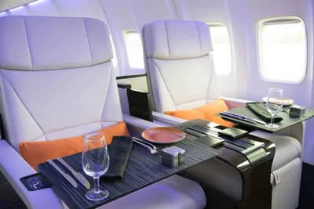
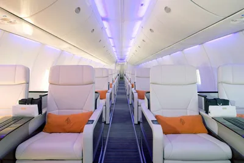
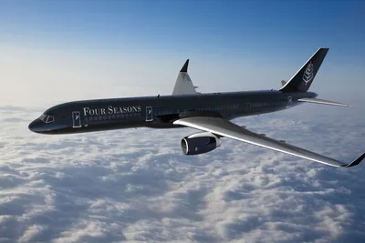
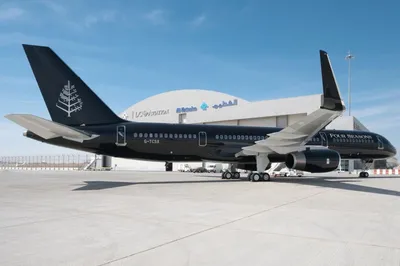
Remote Wonders
Dubai, Hoi An, Angkor Wat, Bangkok, Chiang Mai oder Chiang Rai, Seychellen, Ruanda, Serengeti, Dubai
Luxusabenteurer aufgepasst! Mit den „Remote Wonders“ geht es für Sie 21 Tage lang auf eine außergewöhnliche Reise durch Asien und Afrika. Zum Auftakt knallen bei einer exklusiven Silvesterparty in Dubai die Champagner-Korken, bevor es weiter in das zauberhafte Hoi An geht, wo Sie nicht nur die charmante Altstadt erkunden und an einem privaten Dinner unter farbenfrohen Lampions teilnehmen, sondern sich auch ein exklusives Gewand maßschneidern lassen. Nach dem sagenumwobenen Tempeln von Angkor Wat fliegen Sie weiter in die faszinierende Megametropole Bangkok. Im Inselparadies Seychellen heißt es mit dem Katamaran das türkisblaue Wasser rund um den Traumstrand „Petite Anse“ erkunden, bevor die Reise mit einem krönenden Abschluss bei den Gorillas in Ruanda und einem unvergesslichen Dinner mit den Massai-Kriegern im Serengeti Nationalpark schließlich endet.
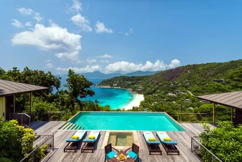
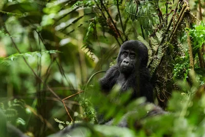
Ancient Explorer
Miami, Mexiko-Stadt, Osterinsel, Bora Bora, Great Barrier Reef, Koh Samui oder Bangkok, Jordanien, Pyramiden, Athen, Madrid
Das 24-tägige „Ancient Explorer“-Package beginnt im sonnenverwöhnten Miami. Nächster Halt ist Mexiko City, wo Sie an einer Mezcal-Masterclass teilnehmen. Next stop: die magische Osterinsel, wo Sie auf dem Pferderücken die mystische Vulkanlandschaft und die berühmten Moai-Statuen erkunden. Dann erleben Sie bei einer privaten Cruise die farbenfrohe Unterwasserwelt des Great Barrier Reefs, gefolgt von einem Stopp im tropischen Koh Samui, wo sich Mutige in der traditionellen Kampfkunst „Muay Thai“ üben. In Ägypten geht es für Sie bei einem Besuch der Sphinx und den beeindruckenden Pyramiden von Gizeh zurück in die bewegende Vergangenheit. Das Ende der Reise führt Sie schließlich nach Athen und Madrid, wo Sie den Luxus zweier Four Seasons Häuser genießen dürfen. Zu den Höhepunkten zählen der Besuch der Akropolis und des Parthenons in Athen und der private Flamenco-Unterricht in Madrid.
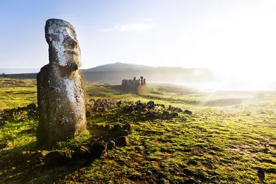
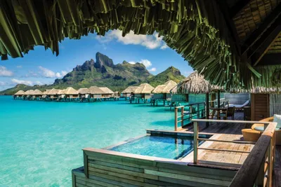
International Intrigue
Seattle, Kyoto, Hoi An, Malediven, Serengeti, Marrakesch, Budapest, St. Petersburg, Paris
Ein Muss für alle Globetrotter! Mit der Reise „International Intrigue“ geht es für Sie auf vier Kontinente – von pulsierenden und schillernden Kulturhauptstädten, abgeschiedenen Inselparadiesen bis zur afrikanischen Savanne. Erleben Sie die schönsten Plätze, die dieser Planet zu bieten hat. Höhepunkte sind beispielsweise ein Flug mit dem Wasserflugzeug über die glitzernde Skyline von Seattle, eine entspannende Zen-Meditation in Kyoto, eine Walking Safari in der Serengeti und ein Besuch der duftenden Gewürzmärkte in Marrakesch.
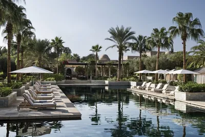
Timeless Encounters
Kona, Bora Bora, Sydney, Bali, Chiang Mai oder Chiang Rai, Taj Mahal, Dubai, Prag, London
Zu zeitlosen Begegnungen hebt der Four Seasons Private Jet im Rahmen der 24-tägigen Tour Timeless Encounters ab: Ziele sind unter anderem die paradiesischen Strände Bora Boras und Sydneys weltbekannter Bondi Beach, das beeindruckende Taj Mahal in Indien, Hawaiis Big Island und die Insel der Götter. Am Ende der Reise warten Glitzer und Glamour in den Megametropolen Dubai und London.
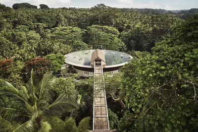
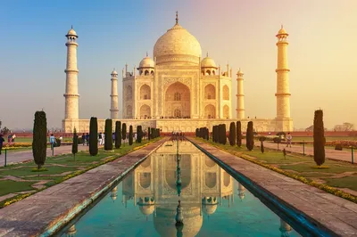
Möchten Sie selbst in den Genuss einer exklusiven Reise im Privatjet von Four Seasons kommen? Gern erstellen wir Ihnen ein Angebot und freuen uns über Ihren Anruf unter der +49 (0) 89-127091-0 oder über unser Anfrage-Formular.
Ihre Reise persönlich planen
Wir stimmen Route, Unterkünfte und Reisedaten persönlich mit Ihnen ab.
Persönliche Beratung anfragen ↗